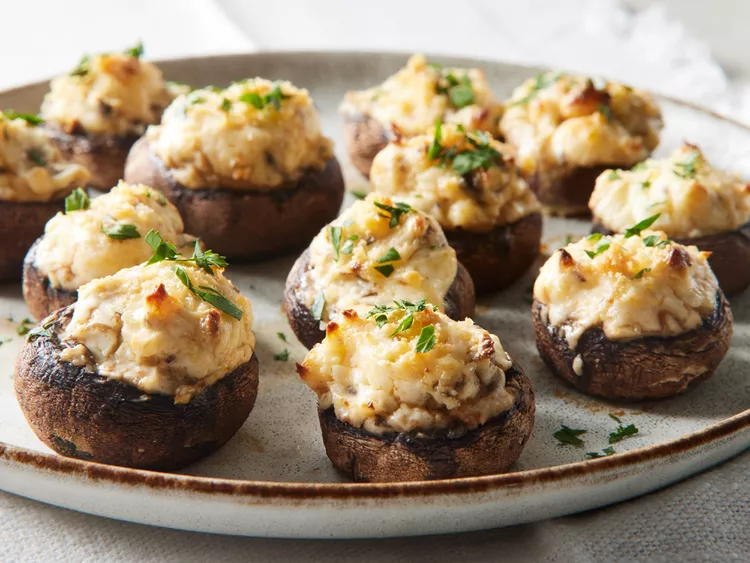

Home
Stuffed mushrooms

Description
A wonderful appetizer before the main dish!
Ingredients
- 12 whole fresh mushrooms
- 1 tablespoon vegetable oil
- 1 tablespoon minced garlic
- 1 (8 ounce) package cream cheese, softened
- ¼ cup grated Parmesan cheese
- ¼ teaspoon ground black pepper
- ¼ teaspoon onion powder
- ¼ teaspoon ground cayenne pepper
Preparation steps
-
Gather all ingredients. Preheat the oven to 350 degrees F (175 degrees
C). Spray a baking sheet with cooking spray.
-
Clean mushrooms with a damp paper towel; carefully break off stems. Chop
stems extremely fine, discarding the tough end of stems.
-
Heat oil in a large skillet over medium heat. Add garlic and chopped
mushroom stems; fry until any moisture has evaporated, taking care not
to burn garlic. Set aside to cool.
-
Stir in cream cheese, Parmesan cheese, black pepper, onion powder, and
cayenne. The mixture will be very thick.
-
Use a teaspoon to fill each mushroom cap with a generous amount of
stuffing. Arrange mushroom caps on the prepared cookie sheet.
-
Bake in the preheated oven until the mushrooms are piping hot, about 20
minutes.
- Serve and enjoy!